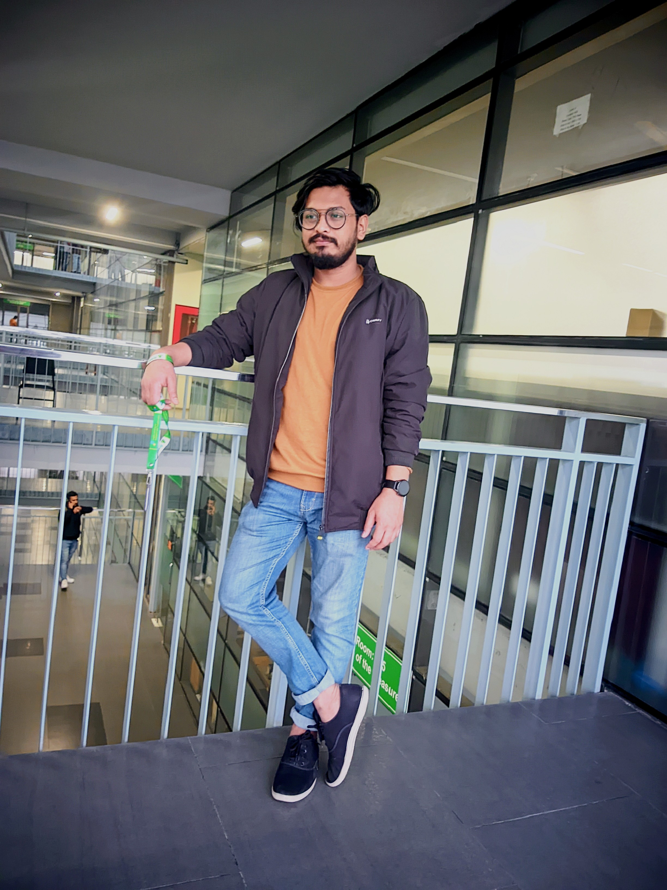
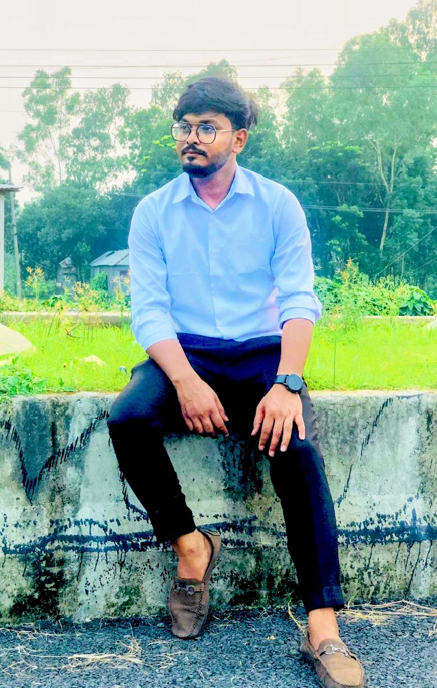

01
Available for new opportunities
Building the infrastructure behind what’s next.
I’m Md. Sakowat Hosen, an Assistant Network Engineer in Dhaka with 3.8 years across enterprise and ISP infrastructure — MikroTik and Cisco networks, Windows Server, virtualisation and monitoring.


Open to workDhaka, Bangladesh
MikroTik · Ciscorouting & switching
01 / About
The work is technical. The impact is human.
I work at the intersection of network reliability, systems thinking and modern infrastructure.
I am a Computer Science and Engineering graduate working as an Assistant Network Engineer at OnnoRokom Projukti Limited. My days go into routing and switching, VLAN design, IP planning, wireless and VoIP — and into keeping live online classes on the air while thousands of students are watching.
Before that I spent almost two years in the ISP sector, monitoring core network infrastructure and resolving customer connectivity incidents. That is where I learned what a few minutes of downtime actually costs.
Alongside networking I work with Windows Server and virtualisation — Active Directory, DNS, DHCP, GPO, Hyper-V and VMware — and I am steadily moving toward automation and DevOps practice.
Career objective
To establish a career in the IT industry as a System/Network Engineer, using my networking knowledge and practical skills to deliver reliable and efficient IT solutions.
Bangla Native
English Professional
Hindi Conversational
0.8
Years of experience
00
Router & switch vendors
0.45
BSc CGPA / 4.00
00/7
Live class monitoring
02 / Capabilities
Tools for keeping systems in motion.
From the network edge to the observability layer, I build a practical toolkit around dependable infrastructure.
02
Windows Server & virtualisation
03
Monitoring & support
04
Systems & DevOps
Currently learning — Kubernetes, Ansible, CI/CD, AWS
03 / Experience
Learning by keeping the lights on.
DEC 2024 — PRESENT
1.8 yrs
Full-time · Kazi Nazrul Islam Ave, Dhaka
Assistant Network Engineer
OnnoRokom Projukti Limited
- Install, configure and maintain MikroTik routers and Cisco, Huawei and BDCOM switches, including rack mounting, power, uplink and port connectivity.
- Manage cabling, patch panels, cable labelling and cable routing inside server racks.
- Maintain LAN, WAN and wireless infrastructure for low latency and maximum uptime.
- Manage IP address allocation, VLAN configuration, routing and switching policy across environments.
- Configure wireless devices, IP phone systems and VoIP services.
- Monitor network and system logs with Elastic Stack (ELK) and infrastructure health with Grafana.
- Run real-time monitoring of Udvash live classes so online sessions stay uninterrupted.
- Support internal teams and branch offices with troubleshooting, device inventory and automated configuration backups.
- Coordinate with vendors and ISPs on issue resolution, maintenance and infrastructure upgrades.
MikroTikCiscoHuaweiBDCOM
VLANVoIPELKGrafana
NOV 2022 — SEP 2024
1.9 yrs
Full-time · ISP sector · Badda, Dhaka
Support Executive (P&D)
Premium Connectivity Limited
- Monitored uplink and downlink traffic, service availability and network performance using NMS tools, including service up/down checks.
- Handled customer complaints and connectivity issues, ran line checks and coordinated troubleshooting for timely service restoration.
- Coordinated with Fiber, Transmission and Power teams to resolve fiber faults, power issues and network outages.
- Performed remote configuration, troubleshooting and backup of network devices and servers over Telnet and SSH.
- Monitored ISP network servers and core infrastructure to keep services reliable.
- Followed up incidents with internal technical teams and customers to minimise downtime.
NMS toolsTelnet / SSHFiber
ISP coreIncident response
04 / Selected work
Practical systems, real-world thinking.
LIVE / 01
01
Live class infrastructure monitoring
Udvash runs online classes where a dropped link means thousands of students lose the session. I keep that path healthy in real time — watching network and system logs in Elastic Stack, infrastructure health in Grafana, and stepping in before a degraded link becomes a dead one.
TOPOLOGY / 02
> Get-ADDomainController
● domain services running
windows server 2016 / hyper-v
monitor / escalate / restore
04
ISP core monitoring & incident response
Two years on the ISP side: watching uplink and downlink traffic and core infrastructure through NMS tools, taking customer faults from first call to restoration, and pulling Fiber, Transmission and Power teams together when the cause sat outside the network.
05 / Education & training
The foundation under the stack.
A curious engineer is always still learning.
BSc in Computer Science & Engineering
Green University of Bangladesh
Bachelor’s degree · CGPA 3.45 / 4.00Diploma in Network System Administration
IsDB-BISEW IT Scholarship Programme · IDB Bhaban, Dhaka
Six-month professional qualificationDiploma in Engineering, Electronics Technology
Magura Polytechnic Institute · Bangladesh Technical Education Board
CGPA 3.27 / 4.00Secondary School Certificate, Science
Shimor High School · Dinajpur Board
GPA 4.83 / 5.00
Industrial training
Basic PLC Automation System
North Bengal Engineering Institute · Six months · Gazipur, Dhaka · 2019
Looking for
Mid-level System / Network Engineer
ISP · IT enabled services · hardware & network companies · Dhaka, Rajshahi, Narayanganj,
Dinajpur
06 / Resume
A clearer picture of how I work.
Download my complete resume for the full detail on my experience, technical skills, education and projects.
07 / Contact
Let’s work together.
For opportunities, collaboration or technology conversations.